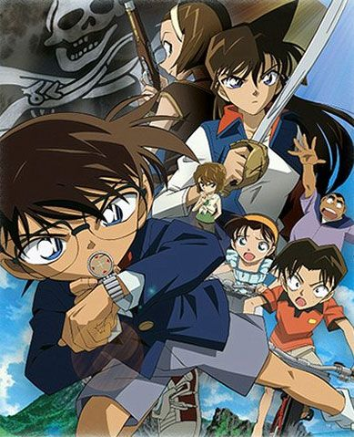

Conan ยอดนักสืบจิ๋วโคนัน ภาคพิเศษ คดีปริศนากับโคนันที่หายไป [พากย์ไทย] จบ
เรื่องย่อ เหตุการณ์เกิดขึ้นเมื่อรัน, ไฮบาระ, และโคนัน ชวนกันไปอาบน้ำที่โรงอาบน้ำสาธารณะ ซึ่งในโรงอาบน้ำนั้นโคนันก็ไปพบกับนักฆ่าระดับตำนานเข้า ด้วยความที่เป็นนักสืบจึงมิวายเอาตัวเข้าไปสืบว่านักฆ่านั้นมีแผนอะไรอยู่กันแน่ แต่อยู่ดีไม่ว่าดีโคนันกลับลื่นล้มหัวฟาดพื้นสลบไป นักฆ่าคนดังกล่าวเห็นท่าไม่ดีคิดว่าโคนันต้องระแคะระคายอะไรสักอย่างก็เลยนำตัวโคนันไปด้วย หลังจากนั้นไม่นานรันและไฮบาระก็รู้ตัวว่าโคนันหายไปจึงพยายามออกตามหากัน โคนันฟื้นขึ้นมาในที่กลบดานของคนร้าย แถมความทรงจำยังหายไปเพราะหัวที่กระแทกพื้นอีกด้วย แล้วโคนันจะหนีเอาตัวรอดออกมาได้หรือไม่?